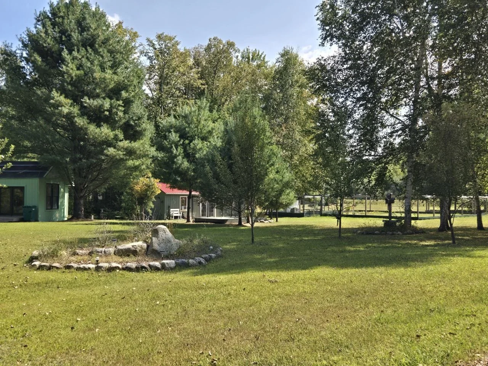
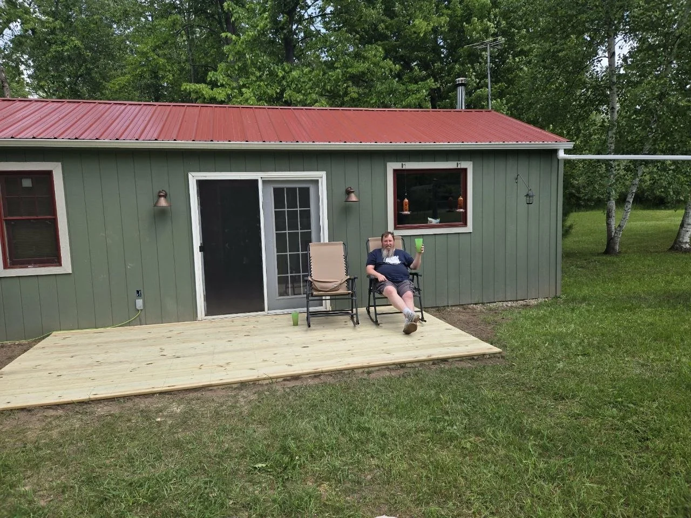
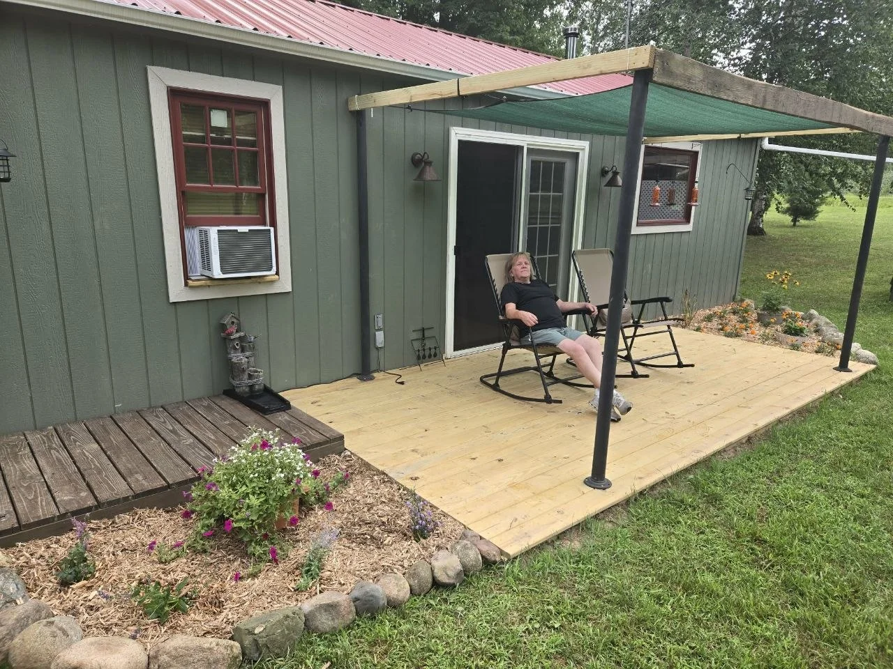
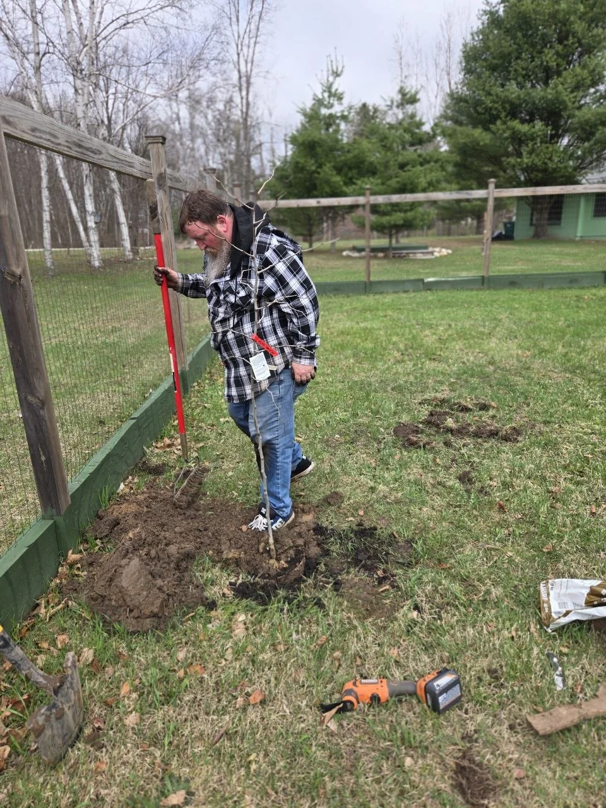

Backyard Projects
Turn Old Lumber Into a Fun Backyard Squirrel Playground
A simple homemade playground that came from paying attention to how much the chipmunks loved the old woodpile.
Read the story ↗A cabin in northern Michigan. Raised beds back in the city. Jeff, Vanessa, and a growing cast of backyard regulars. The stories cross paths because real life does.

The running cabin story holds the setbacks, the work, and the slower life taking shape.
What We’re Up To Around the Yard and CabinOne curious chipmunk helps connect the cabin to the wildlife builds.
The little visitor who became Chippy
The city beds kept growing—or struggling—while cabin life pulled in another direction.
The city beds did not wait for us
The deck story begins with lumber and work, then ends with the chairs coming out.
Let’s Build That Deck, BABY!
The shade, flowers, Harry, and Chippy change how time feels outside.
The deck changed how we spent our time
The new fruit trees are a beginning, not a finished success story.
A chilly day. Three new fruit trees.
A few useful places to start with the thing you’re thinking about trying next.
A simple homemade playground that came from paying attention to how much the chipmunks loved the old woodpile.
Read the story ↗
A little terracotta, a little trial and error, and a more forgiving way to keep the raised beds watered.
Read the story ↗
A real spring planting day at the cabin, a few muddy photos, and some fun reasons these under-the-radar fruit trees are so interesting.
Read the story ↗